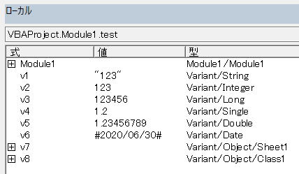

VBAのVariant型について
Variantデータ型は、他の何らかのデータ型として明示的に宣言されていない変数で、全てのデータ型を入れることができます。
Variantデータ型には型宣言文字はありません。
ただし、固定長文字列データ型として格納することはできません。
また、ユーザー定義型を格納することもできません。
データ型の基本については以下を参照してください。
目次
Variant型変数のデータ型を調べる

バリアント型 (Variant) 変数の初期値はEmptyです。
変数がEmpty値であるかの判定には、IsEmpty関数を使用してください。
Variant型変数のメモリアドレス
詳しくは以下を参照してください。
Variant型どうしの算術演算
ByteはIntegerへ、IntegerはLongへ、LongとSingleはDoubleへ昇格されます。
Dim v1, v2, v3, v4, v5, v6, v7
v1 = CByte(125)
v2 = CByte(125)
v3 = v1 + v2
v4 = v1 * v2
v5 = v1 * v2 * 10
v6 = v1 ^ v2
v7 = v1 / v2
Stop
Variant型どうしの比較演算
| 条件 | Then |
| 両方のバリアント型 (Variant) の式が数値 | 数値比較を実行します。 |
| 両方のバリアント型 (Variant) の式が文字列 | 文字列比較を実行します。 |
| 一方のバリアント型 (Variant) の式が数値で、もう一方が文字列 | 数値式は文字列式よりも小さくなります。 |
| 一方のバリアント型 (Variant) の式がEmptyで、もう一方は数値 | 0をEmpty式として使用して、数値比較を実行します。 |
| 一方のバリアント型 (Variant) の式がEmptyで、もう一方が文字列 | 長さ0の文字列 ("") をEmpty式として使用して、文字列比較を実行します。 |
| 両方のバリアント型 (Variant) の式がEmpty | 式は等しくなります。 |
最も注意すべき点は、一方が数値で、もう一方が文字列の場合です。
数値式は文字列式よりも小さくなります。
Dim v1, v2
v1 = 123
v2 = "120"
Debug.Print v1 < v2
Debug.Print v1 = v2
Debug.Print v1 > v2
上記VBAにおいては、実際の数値に関係なく常に、
True ・・・ 左辺が数値式なのでTrueになります。
False
False
このように数値式は常に小さく判定されます。
RangeのValueプロパティの比較
従ってVariantの比較になるので注意が必要です。
A1は数値、A2は文字列になっています。
Dim v
v = "123"
Debug.Print Range("A1").Value = Range("A2").Value
Debug.Print Range("A1").Value = v
Debug.Print Range("A2").Value = v
数値式は文字列式よりも小さくなりますので、この結果は、
False
False
True ・・・ 文字列式どうしの比較
となります。
文字列を数値変換するには、
CLng関数
そこで、事前に数値変換可能かを、IsNumeric関数を使い判定しておきます。
Sub test()
Debug.Print CompareValue(Range("A1"), Range("A2"))
End Sub
Function CompareValue(rng1 As Range, rng2 As Range)
'エラー値の場合はFalseを返す
If IsError(rng1.Value) Or IsError(rng2.Value) Then
CompareValue = False
Exit Function
End If
'両方数値の場合は数値比較する
If IsNumeric(rng1.Value) And IsNumeric(rng2.Value) Then
If CDbl(rng1.Value) = CDbl(rng2.Value) Then
CompareValue = True
Else
CompareValue = False
End If
Exit Function
End If
'文字列比較
If rng1.Value = rng2.Value Then
CompareValue = True
Else
CompareValue = False
End If
End Function
ユーザー定義型（Type）とバリアント（Variant）変数
(Variant 型はユーザー定義型をサポートするようになりました)。
このように書かれていますが、
これは、ActiveXプロジェクトやタイプライブラリの構造体の事をさしていると思われます。
VBA内で定義した構造体を、バリアント（Variant）変数に代入することはできません。
Variant型の配列
Dim n(1 To 3) As Long
この変数nの各要素には、数値または数値変換可能な文字しか代入できません。
しかし、Variant型の場合は、任意のデータ型を入れることができます。
Dim n(1 To 3) As Variant
n(1) = 123
n(2) = 1.23
n(3) = "ABC"
Stop
配列をVariant型の仮引数に渡す
ByValで配列を指定した場合は、赤字のコンパイルエラーとなります。
Sub test()
Dim str(2) As String
str(0) = "A": str(1) = "B": str(2) = "C"
Dim v
v = fnc(str)
Stop
End Sub
Function fnc(ByVal v) As Variant
v(0) = "Z"
fnc = v
End Function
RangeオブジェクトをVariant型の仮引数に渡す
しかし、仮引数に何かを代入した時点で違いが出てきます。
Sub sample()
Dim rng1 As Range
Dim rng2 As Range
Set rng1 = Range("A1:B1")
Set rng2 = Range("A2:B2")
Call sample_sub(rng1, rng2)
End Sub
Sub sample_sub(ByRef v1, ByVal v2)
Stop '①
v1 = 1
v2 = 1
Stop '②
End Sub
①の時点：受け取った直後
②の時点：代入した後
ByValで受け取ったv2は、Let代入では変数が置き換わります。
Set代入した場合は、代入したオブジェクトになります。
Valueの配列で渡したい場合
Call sample_sub(rng1, rng2)
これを
Call sample_sub(rng1.Value, rng2.Value)
このように、Valueプロパティを指定すればValueの配列で渡せます。
また、
Call sample_sub((rng1), (rng2))
このように、()での値評価をすれば、その時点で既定プロパティのValueが取得されるので、Valueの配列で渡せます。
ただし、実引数にCVar(…)としても配列になりません。
同じテーマ「マクロVBA技術解説」の記事
手動計算時の注意点と再計算方法
VBAの用語について：ステートメントとは
オブジェクト変数とは何か
VBAの小数以下の演算誤差について
スピルでVBAの何が変わったか
CharactersプロパティとCharactersオブジェクト
ユーザーに絶対に停止させたくない場合のVBA設定
印刷範囲の設定・印刷範囲のクリア
VBAの省略可能な記述について
VBAのVariant型について
VBAのインデントについて
新着記事NEW ・・・新着記事一覧を見る
VBA100本ノック 100本目：WEBから100本ノックのリストを取得｜VBA練習問題（3月3日）
VBA100本ノック 99本目：自動席替え（行列と前後左右が全て違うように）｜VBA練習問題（3月2日）
VBA100本ノック 98本目：席替えルールが守られているか確認｜VBA練習問題（3月1日）
VBA100本ノック 97本目：Accessデータを取得（グループ集計）｜VBA練習問題（2月27日）
VBA100本ノック 96本目：Accessデータを取得（マスタ結合&抽出）｜VBA練習問題（2月26日）
VBA100本ノック 95本目：図形のテキストを検索するフォーム作成｜VBA練習問題（2月24日）
VBA100本ノック 94本目：表範囲からHTMLのtableタグを作成｜VBA練習問題（2月23日）
VBA100本ノック 93本目：複数ブックを連結して再分割｜VBA練習問題（2月22日）
VBA100本ノック 92本目：セルの色を16進で返す関数｜VBA練習問題（2月20日）
VBA100本ノック 91本目：時間計算（残業時間の月間合計）｜VBA練習問題（2月19日）
アクセスランキング ・・・ ランキング一覧を見る
1.最終行の取得（End,Rows.Count）｜VBA入門
2.RangeとCellsの使い方｜VBA入門
3.変数宣言のDimとデータ型｜VBA入門
4.マクロって何？VBAって何？｜VBA入門
5.Range以外の指定方法（Cells,Rows,Columns）｜VBA入門
6.セルのコピー&値の貼り付け（PasteSpecial）｜VBA入門
7.繰り返し処理（For Next)｜VBA入門
8.セルに文字を入れるとは（Range,Value）｜VBA入門
9.マクロはどこに書くの（VBEの起動）｜VBA入門
10.とにかく書いてみよう（Sub,End Sub）｜VBA入門
- ホーム
- マクロVBA応用編
- マクロVBA技術解説
- VBAのVariant型について
このサイトがお役に立ちましたら「シェア」「Bookmark」をお願いいたします。
記述には細心の注意をしたつもりですが、
間違いやご指摘がありましたら、「お問い合わせ」からお知らせいただけると幸いです。
掲載のVBAコードは動作を保証するものではなく、あくまでVBA学習のサンプルとして掲載しています。
掲載のVBAコードは自己責任でご使用ください。万一データ破損等の損害が発生しても責任は負いません。